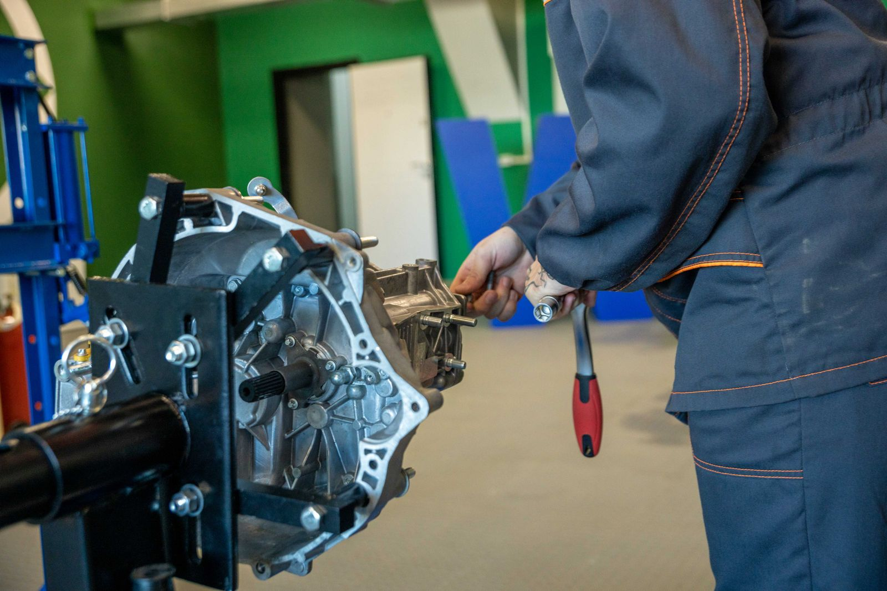

Your transmission,
diagnosed straight — every time.
A & K Transmission Repair has been fixing transmissions in Bryan for over 21 years. Mark and the crew diagnose the actual problem before any work starts, and stand behind the parts and labor they provide.
2602 Cavitt Ave, Bryan, TX 77801

21+YearsIllustrative stock photo (not A & K's own shop) — photo by Sergei Starostin / Pexels.
Transmission work, done right the first time
Real reviews describe full rebuilds, cooler-hose repairs, and late/hard-shift diagnosis on both cars and trucks. Exact services below are general examples for this trade — confirm your specific repair by phone.
Transmission diagnosis
Pinpointing the real cause of slipping, hard shifts, or a transmission that won't reverse before any work begins.
Full & partial rebuilds
In-shop rebuild work on automatic and manual transmissions, cars and trucks.
Cooler line & hose repair
Trans cooler hose and line repair for leaks and overheating.
Clutch & drivetrain work
Clutch replacement and related drivetrain repair — confirm by phone.
Pre-purchase inspection
Transmission check before you buy a used vehicle — confirm availability by phone.
Tow-in service
A real review describes a truck towed straight to the shop for repair — confirm by phone.
Services above are general examples for a transmission shop, informed by real customer reviews — call (979) 823-9011 to confirm exactly what your vehicle needs.
No surprises on the warranty
Parts & labor, warrantied — when we supply the part
A & K stands behind the parts they source and the labor on every job. If a customer supplies their own part for the shop to install, the shop can still do the work, but the warranty only covers what A & K itself provided — a straightforward, common-sense policy, not a hidden catch.
It's the kind of plain-spoken honesty reviewers describe again and again: Mark tells you what's actually wrong, gives a fair price, and does what he says he'll do.
Paraphrased from the owner's own public reply to a customer review on the shop's Google Business listing, verified 2026-09-21 — not a verbatim quote.
21+ years, one shop, one owner who answers the phone
A & K Transmission Repair has operated at 2602 Cavitt Ave in Bryan for more than two decades. Owner Mark Arnold is named directly and repeatedly in customer reviews — not a call center, not a chain, the person who diagnoses your transmission is the person who signs off on the repair.
Reviewers describe a shop that beats competitor quotes on full rebuilds, explains the actual mechanical problem before starting work, and has repeat customers who come back years later for the same reason: they trust what Mark tells them.
Sourced from A & K Transmission Repair's public Google Business Profile, verified 2026-09-21.
2602 Cavitt Ave, Bryan, TX 77801
Hours
Verified on the shop's Google listing (2026-09-21): closed Monday, opens 9 AM Tuesday.
Full weekly hours aren't published — call (979) 823-9011 to confirm before you drive over.
Contact & directions
No independent website found — the Google Business listing is the shop's only verified online presence.
What Bryan says about A & K
A & K holds a 4.5-star rating on Google from 19 reviews, with 16 of them five stars — customers repeatedly name Mark personally and describe fair pricing, honest diagnosis, and rebuilds that beat competitor quotes.
Individual Google review text will appear here once the site is connected live — this demo doesn't publish scraped review quotes.
Rating verified on A & K's public Google Business Profile, 2026-09-21.
Something feel off in the shift?
Call Mark and the crew at A & K Transmission Repair — straight diagnosis, fair price, no surprises.
2602 Cavitt Ave, Bryan, TX 77801 · Get directions